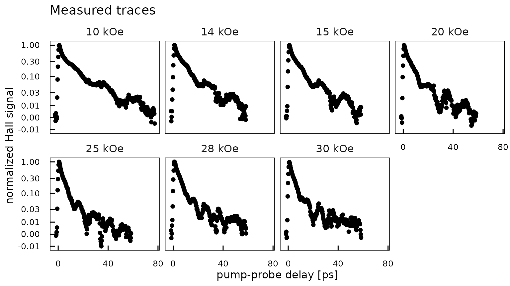
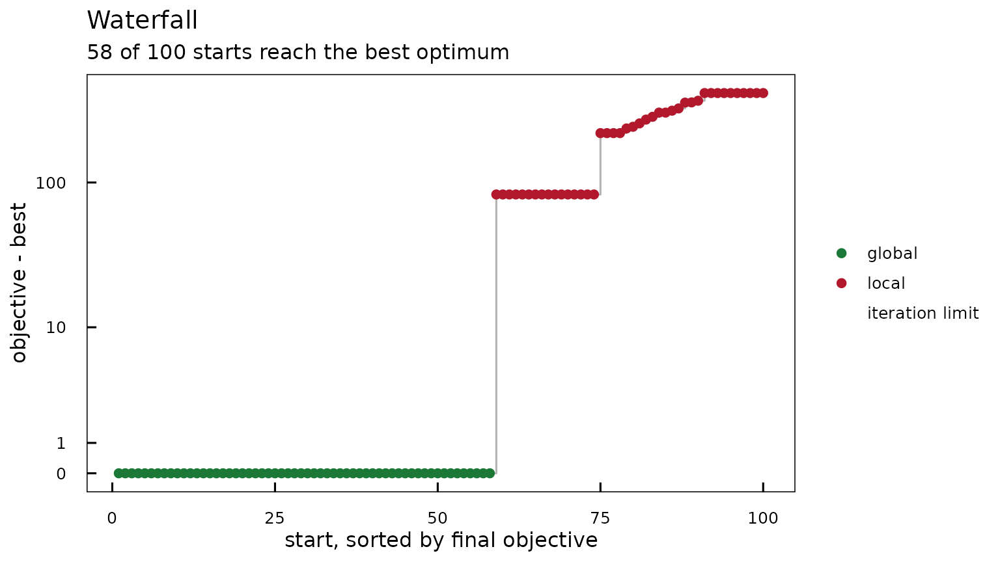
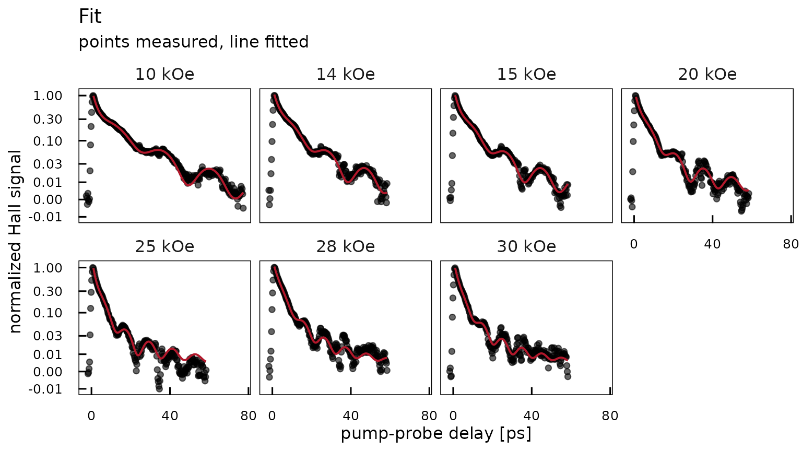
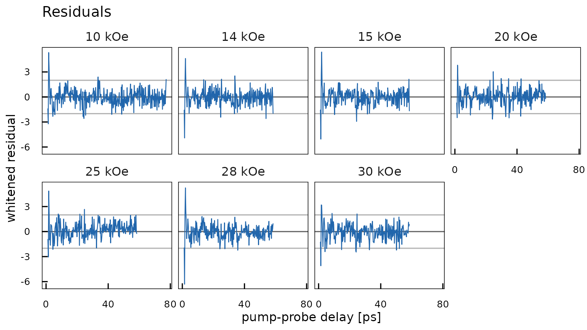
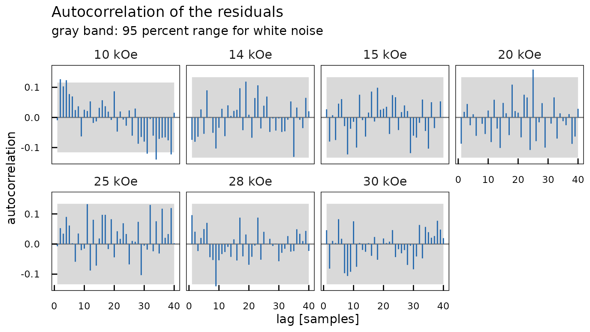
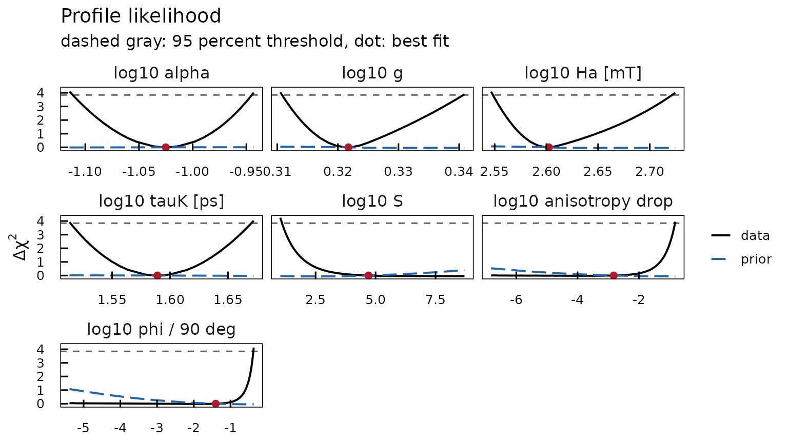

A Landau-Lifshitz-Gilbert model fitted to the pump-probe measurements
of Zhang et al. [1]. Likelihood, noise model
and optimizer are in fitCoPt/fitTools.R;
multistart and profiles are read from fitCoPt/*.rds,
computed if absent.
| sample | [Co (0.5 nm) / Pt (0.9 nm)]5, perpendicular anisotropy |
| pump | 80 fs, 1500 nm |
| probe | anomalous Hall conductivity by THz pulse, delays up to 80 ps |
| field | 1 to 3 T, seven values, about 30 degrees from the normal |
The signal rises within 0.5 ps (ultrafast demagnetization), recovers
within picoseconds and precesses at 40 to 100 GHz; the seven traces are
fitted jointly. Data: Fig. 3 of Zhang et al. [1], CC BY 4.0, doi:10.5281/zenodo.17333041;
see inst/COPYRIGHTS.
library(cppDE)
library(ggplot2)
source("fitCoPt/fitTools.R")
cores <- if (.Platform$OS.type == "windows") 1L else min(10L, parallel::detectCores())Measured traces
raw <- read.csv(system.file("extdata", "zhang2025_precession.csv",
package = "cppDE"))
fields <- sort(unique(raw$field_kOe))
# The first picosecond (ultrafast demagnetization) is not described by the
# model and is left out of the fit.
obs <- lapply(split(raw, raw$field_kOe), function(tr) tr[tr$time_ps >= 1, ])
measured <- do.call(rbind, obs)
kOe <- as_labeller(function(x) paste(x, "kOe"))
# y axis linear near zero and logarithmic above.
signalAxis <- scale_y_continuous(
trans = scales::pseudo_log_trans(sigma = 0.005, base = 10),
breaks = c(-0.01, 0, 0.01, 0.03, 0.1, 0.3, 1))
ggplot(raw, aes(time_ps, signal)) +
geom_point() +
signalAxis +
facet_wrap(~field_kOe, ncol = 4, labeller = kOe) +
scale_x_continuous(n.breaks = 3) +
labs(x = "pump-probe delay [ps]", y = "normalized Hall signal",
title = "Measured traces")
Model formulation
The magnetization direction \(\mathbf m\), \(|\mathbf m| = 1\), follows the Landau-Lifshitz-Gilbert equation in Landau-Lifshitz form
\[ \dot{\mathbf m} = -\frac{\gamma}{1+\alpha^2} \left[\mathbf m\times\mathbf h + \alpha\,\mathbf m\times(\mathbf m\times\mathbf h)\right], \qquad \gamma = \frac{g\,\mu_B}{\hbar}, \]
with Gilbert damping \(\alpha\) and g-factor \(g\). The effective field is the applied field, tilted by \(\phi\) from the normal \(\hat{\mathbf z}\), plus the anisotropy field \(H_a\):
\[ \mathbf h = H\,(\sin\phi,\,0,\,\cos\phi) + H_a\,\bigl(1 - k(t)\bigr)\,m_z\,\hat{\mathbf z}. \]
Heating lowers \(H_a\) by \(k(t) = K\,\kappa(t)\), \(\kappa(0) = 1\), \(\dot\kappa = -\kappa/\tau_K\). Before the pump, \(\mathbf m\) rests at the zero-torque direction \(\mathbf m_0 = (\sin\theta_0, 0, \cos\theta_0)\),
\[ H\sin(\theta_0-\phi) + H_a\sin\theta_0\cos\theta_0 = 0 , \]
with \(\mathbf h(\mathbf m_0) = \lambda\,\mathbf m_0\), \(\lambda = H\cos(\theta_0-\phi) + H_a\cos^2\theta_0\). The drop of \(H_a\) moves the equilibrium; \(\mathbf m\) precesses about it while \(H_a\) recovers.
The states are \(\boldsymbol\xi = (\mathbf m - \mathbf m_0)/K\) and \(\kappa\). Since \(\mathbf m_0\times\mathbf h(\mathbf m_0) = 0\), the right-hand side is a polynomial in \(K\) without constant term: exact for any \(K\), linearized at \(K\to 0\), and free of the cancellation in \(m_{z0} - m_z\).
muB <- 8.794e-5 # mu_B / hbar in rad / (ps mT)
a <- "(10^log10Alpha)" # positive parameters as log10
g <- sprintf("(%g*10^log10G/(1 + %s^2))", muB, a)
xm <- "(xi_x*sin(th) + xi_z*cos(th))" # xi . m0
xx <- "(xi_x^2 + xi_y^2 + xi_z^2)" # xi . xi
eta <- "(10^log10Ha*(xi_z - kap*(cos(th) + K*xi_z)))" # (h - lam m0) / K, z
a1 <- sprintf("(lam*%s + %s*cos(th))", xm, eta)
a2 <- sprintf("(%s*xi_z)", eta)
b1 <- sprintf("(2*%s)", xm)
b2 <- xx
# m x h / K
cx <- sprintf("(lam*xi_y*cos(th) + K*%s*xi_y)", eta)
cy <- sprintf("(lam*(xi_z*sin(th) - xi_x*cos(th)) - %s*sin(th) - K*%s*xi_x)",
eta, eta)
cz <- "(-lam*xi_y*sin(th))"
# (m (m.h) - h (m.m)) / K
dx <- sprintf(paste0("(lam*xi_x + sin(th)*%s - lam*sin(th)*%s",
" + K*(xi_x*%s + sin(th)*%s - lam*sin(th)*%s)",
" + K^2*xi_x*%s)"),
a1, b1, a1, a2, b2, a2)
dy <- sprintf("(lam*xi_y + K*xi_y*%s + K^2*xi_y*%s)", a1, a2)
dz <- sprintf(paste0("(lam*xi_z + cos(th)*%s - %s - lam*cos(th)*%s",
" + K*(xi_z*%s + cos(th)*%s - %s*%s - lam*cos(th)*%s)",
" + K^2*(xi_z*%s - %s*%s))"),
a1, eta, b1, a1, a2, eta, b1, b2, a2, eta, b2)
llg <- c(
xi_x = sprintf("-%s*(%s + %s*%s)", g, cx, a, dx),
xi_y = sprintf("-%s*(%s + %s*%s)", g, cy, a, dy),
xi_z = sprintf("-%s*(%s + %s*%s)", g, cz, a, dz),
kap = "-kap*10^(-log10TauK)"
)
# Initial states xi = 0 and kappa = 1 are not estimated. H and phi enter only
# through th and lam.
model <- cppODE(llg, fixed = c("xi_x", "xi_y", "xi_z", "kap"),
modelname = "copt_precession", method = "bdf", deriv = TRUE)Observation and noise model
The anomalous Hall conductivity is proportional to the out-of-plane magnetization; two exponentials per measurement describe the demagnetization recovery:
\[ y(t) = A_1 e^{-t/\tau_1} + A_2 e^{-t/\tau_2} + S\,\bigl[m_{z0} - m_z(t)\bigr] = A_1 e^{-t/\tau_1} + A_2 e^{-t/\tau_2} - S\,K\,\xi_z(t). \]
Shared by all fields: \(\alpha\), \(g\), \(H_a\), \(\tau_K\), \(S\), \(K\), \(\phi\). Per measurement: background and noise level. \(H\) is the set field, \(\mu_B/\hbar\) the only fixed constant. cppDE returns \(\partial\boldsymbol\xi/\partial p\); \(\theta_0\) and \(\lambda\) depend on \(H_a\) and \(\phi\) by the implicit function theorem,
\[ \frac{\partial\theta_0}{\partial H_a} = -\frac{\sin\theta_0\cos\theta_0}{D},\qquad \frac{\partial\theta_0}{\partial\phi} = \frac{H\cos(\theta_0-\phi)}{D},\qquad D = H\cos(\theta_0-\phi) + H_a\cos 2\theta_0 , \]
and the chain rule completes the sensitivities in \(H_a\) and \(\phi\). The residual autocorrelation decays within five samples (about one picosecond), so the noise is a moving average [2],
\[ u_t = \eta_t + \sum_{j=1}^{5} w_j\,\eta_{t-j},\qquad \eta_t\sim\mathcal N(0,\sigma^2), \]
with shared kernel \(w\) and \(\sigma\) per measurement. Without correlation beyond five samples, the noise model cannot absorb the precession. The likelihood, the conditional sum of squares of the innovations \(\eta_t\) with \(\log\sigma\) as a pseudo-residual, stays least squares. The Ljung-Box test [3] checks the innovations for remaining correlation.
equilibrium <- function(Ha, H, phi) {
torque <- function(th) H * sin(th - phi) + Ha * sin(th) * cos(th)
th <- uniroot(torque, c(0, phi), tol = 1e-12 * phi)$root
sc <- sin(th) * cos(th)
den <- H * cos(th - phi) + Ha * cos(2 * th)
thHa <- -sc / den
thPhi <- H * cos(th - phi) / den
list(theta = th,
lam = H * cos(th - phi) + Ha * cos(th)^2,
dHa = c(th = thHa, lam = cos(th)^2 - Ha * sc * thHa),
dPhi = c(th = thPhi, lam = H * sin(th - phi) - Ha * sc * thPhi))
}
physics <- c("log10Alpha", "log10G", "log10Ha", "log10TauK", "log10S",
"logit10K", "logit10Phi")
kernel <- paste0("w", 1:5)
bgNames <- function(f) paste0(c("log10A1_", "log10Tau1_", "log10A2_",
"log10Tau2_"), f)
sigmaName <- function(f) paste0("logSigma_", f)
ln10 <- log(10)
traceSignal <- function(p, k, tt) {
H <- 100 * fields[k]
bn <- bgNames(fields[k])
K <- toNatural("logit10K", p[["logit10K"]])
S <- 10^p[["log10S"]]
Ha <- 10^p[["log10Ha"]]
u <- toNatural("logit10Phi", p[["logit10Phi"]])
phi <- pi / 2 * u # between 0 and 90 degrees
eqm <- equilibrium(Ha, H, phi)
pars <- c(xi_x = 0, xi_y = 0, xi_z = 0, kap = 1, K = K, th = eqm$theta,
lam = eqm$lam, p[c("log10Alpha", "log10G", "log10Ha", "log10TauK")])
sol <- tryCatch(solveODE(model, c(0, tt), pars, abstol = 1e-9, reltol = 1e-9),
error = function(e) NULL)
if (is.null(sol)) return(NULL)
xi <- sol$variable[-1, "xi_z"]
dxi <- sol$tangent[-1, "xi_z", , drop = TRUE]
viaRest <- function(d) dxi[, "th"] * d[["th"]] + dxi[, "lam"] * d[["lam"]]
prec <- -S * K * xi
T1 <- 10^p[[bn[2]]]
T2 <- 10^p[[bn[4]]]
e1 <- 10^p[[bn[1]]] * exp(-tt / T1)
e2 <- 10^p[[bn[3]]] * exp(-tt / T2)
J <- matrix(0, length(tt), length(p), dimnames = list(NULL, names(p)))
J[, "log10Alpha"] <- -S * K * dxi[, "log10Alpha"]
J[, "log10G"] <- -S * K * dxi[, "log10G"]
J[, "log10Ha"] <- -S * K * (dxi[, "log10Ha"] + ln10 * Ha * viaRest(eqm$dHa))
J[, "log10TauK"] <- -S * K * dxi[, "log10TauK"]
J[, "log10S"] <- ln10 * prec
J[, "logit10K"] <- -S * (xi + K * dxi[, "K"]) * ln10 * K * (1 - K)
J[, "logit10Phi"] <- -S * K * viaRest(eqm$dPhi) * pi / 2 * ln10 * u * (1 - u)
J[, bn[1]] <- ln10 * e1
J[, bn[2]] <- ln10 * e1 * tt / T1
J[, bn[3]] <- ln10 * e2
J[, bn[4]] <- ln10 * e2 * tt / T2
list(y = e1 + e2 + prec, J = J)
}
likelihood <- function(p) { # innovations: the whitened residuals
r <- J <- innovations <- vector("list", length(fields))
for (k in seq_along(fields)) {
part <- traceSignal(p, k, obs[[k]]$time_ps)
if (is.null(part)) return(NULL)
sn <- sigmaName(fields[k])
z <- maResiduals(part$y - obs[[k]]$signal, part$J, p[[sn]], p[kernel])
if (is.null(z)) return(NULL)
z$J[, sn] <- z$dSigma
z$J[, kernel] <- z$dW
r[[k]] <- z$r
J[[k]] <- z$J
innovations[[k]] <- z$r[seq_along(part$y)]
}
list(r = unlist(r), J = do.call(rbind, J),
innovations = setNames(innovations, paste(fields, "kOe")))
}
priorSd <- 3
prior <- c(log10Alpha = -1, log10G = log10(2), log10Ha = 3,
log10TauK = log10(30), log10S = 0, logit10K = 0,
logit10Phi = log10(0.5))
residuals <- withPrior(likelihood, prior, priorSd)Multistart optimization
Gauss-Newton trust region with exact subproblem (More-Sorensen), 100 random starts. Positive parameters are fitted in \(\log_{10}\), the fractions \(K\) and \(\phi/90^\circ\) as \(\log_{10}\bigl(x/(1-x)\bigr)\). Physics parameters have a Gaussian prior of three decades standard deviation, centered on orders of magnitude and the nominal field angle.
set.seed(2)
nStart <- 100
perTrace <- do.call(cbind, lapply(fields, function(f) {
tail <- obs[[as.character(f)]]$signal[obs[[as.character(f)]]$time_ps > 30]
m <- cbind(runif(nStart, log10(0.3), log10(3)),
runif(nStart, log10(0.5), log10(5)),
runif(nStart, log10(0.05), log10(2)),
runif(nStart, log10(2), log10(30)),
log(sd(diff(tail))) + runif(nStart, -0.5, 0.5))
colnames(m) <- c(bgNames(f), sigmaName(f))
m
}))
# Geometrically decaying kernels are invertible, so every start can be
# whitened.
decay <- runif(nStart, 0.2, 0.8)
kernelStarts <- outer(decay, seq_along(kernel), `^`)
colnames(kernelStarts) <- kernel
phiStart <- runif(nStart, 10, 60) / 90
starts <- cbind(log10Alpha = runif(nStart, log10(0.005), 0),
log10G = runif(nStart, log10(1.5), log10(3)),
log10Ha = runif(nStart, 2, log10(5000)),
log10TauK = runif(nStart, log10(2), log10(500)),
log10S = runif(nStart, -1, log10(50)),
logit10K = runif(nStart, -2, 1),
logit10Phi = log10(phiStart / (1 - phiStart)),
kernelStarts, perTrace)
ms <- multistart(residuals, starts, cores)
table(ms$status)
#>
#> global local
#> 58 42
plotWaterfall(ms)
fit <- ms$bestFit and residuals
fitted <- do.call(rbind, lapply(seq_along(fields), function(k) {
tt <- seq(1, max(obs[[k]]$time_ps), length.out = 400)
data.frame(field_kOe = fields[k], time_ps = tt,
signal = traceSignal(fit$par, k, tt)$y)
}))
ggplot(raw, aes(time_ps, signal)) +
geom_point(alpha = 0.6) +
geom_line(data = fitted, color = "#b2182b", linewidth = 0.7) +
signalAxis +
facet_wrap(~field_kOe, ncol = 4, labeller = kOe) +
scale_x_continuous(n.breaks = 3) +
labs(x = "pump-probe delay [ps]", y = "normalized Hall signal",
title = "Fit", subtitle = "points measured, line fitted")
# The whitened residuals, the innovations, with the Ljung-Box test and their
# autocorrelation.
res <- likelihood(fit$par)$innovations
ggplot(data.frame(field_kOe = measured$field_kOe, time_ps = measured$time_ps,
r = unlist(res)),
aes(time_ps, r)) +
geom_hline(yintercept = c(-2, 2), color = "gray70") +
geom_hline(yintercept = 0, color = "gray40") +
geom_line(color = "#2166ac", linewidth = 0.4) +
facet_wrap(~field_kOe, ncol = 4, labeller = kOe) +
scale_x_continuous(n.breaks = 3) +
labs(x = "pump-probe delay [ps]", y = "whitened residual",
title = "Residuals")
signif(residualCheck(res), 3)
#> n chi2_per_point lag1 LjungBox p
#> 10 kOe 286 1 -0.00928 17.40 0.0654
#> 14 kOe 215 1 -0.07440 9.44 0.4910
#> 15 kOe 215 1 0.02710 8.08 0.6210
#> 20 kOe 215 1 -0.08720 4.09 0.9430
#> 25 kOe 215 1 -0.00731 4.72 0.9090
#> 28 kOe 215 1 0.09600 10.40 0.4030
#> 30 kOe 215 1 0.04600 11.40 0.3270
plotResidualACF(res)
labels <- c(log10Alpha = "alpha", log10G = "g", log10Ha = "Ha [mT]",
log10TauK = "tauK [ps]", log10S = "S", logit10K = "anisotropy drop",
logit10Phi = "phi / 90 deg")
estimates <- natural(fit$par[physics])
names(estimates) <- labels[physics]
signif(estimates, 4)
#> alpha g Ha [mT] tauK [ps] S
#> 0.09411 2.10600 414.50000 39.06000 329.20000
#> anisotropy drop phi / 90 deg
#> 0.01983 0.13470
noiseLevel <- setNames(exp(fit$par[sigmaName(fields)]), paste(fields, "kOe"))
signif(noiseLevel, 3)
#> 10 kOe 14 kOe 15 kOe 20 kOe 25 kOe 28 kOe 30 kOe
#> 0.00323 0.00470 0.00341 0.00356 0.00330 0.00434 0.00386
signif(fit$par[kernel], 3)
#> w1 w2 w3 w4 w5
#> 0.967 0.708 0.444 0.256 0.136Profile likelihood
Refit with the prior recentered on the best fit, standard deviation 10 decades.
priorSd <- 10
prior[] <- fit$par[names(prior)]
residuals <- withPrior(likelihood, prior, priorSd)
wide <- gaussNewton(residuals, fit$par)
# at most 100 steps and 4 decades on each side of the best fit
prof <- profiles(residuals, wide$par, which = physics, range = 4,
maxSteps = 100, cores = cores)
plotProfiles(prof, labels = labels)
# 95 percent intervals from the data part of the profiles.
intervals <- profileIntervals(prof)
rownames(intervals) <- labels[rownames(intervals)]
signif(intervals, 4)
#> lower upper
#> alpha 0.07732 0.1135
#> g 2.04500 2.1910
#> Ha [mT] 353.40000 526.7000
#> tauK [ps] 32.66000 46.7900
#> S 12.54000 Inf
#> anisotropy drop 0.00000 0.1503
#> phi / 90 deg 0.00000 0.4194
cat(sprintf("field angle between %.0f and %.0f degrees\n",
90 * intervals["phi / 90 deg", "lower"],
90 * intervals["phi / 90 deg", "upper"]))
#> field angle between 0 and 38 degreesComparison of precession frequencies
At small amplitudes \(S\), \(K\) and \(\phi\) enter to first order as a product and are not determined individually. Small-angle (Smit-Beljers) frequency of the fit against the damped-sine frequencies of the paper:
fmr <- function(H, Ha, alpha, g, phi) {
th <- equilibrium(Ha, H, phi)$theta
w <- g * muB * sqrt((H * cos(th - phi) + Ha * cos(2 * th)) * H * sin(phi) / sin(th))
1000 * w / (2 * pi * (1 + alpha^2))
}
paper <- read.csv(system.file("extdata", "zhang2025_frequencies.csv",
package = "cppDE"))
paper$model_GHz <- sapply(100 * paper$field_kOe, fmr,
Ha = estimates[["Ha [mT]"]],
alpha = estimates[["alpha"]],
g = estimates[["g"]],
phi = pi / 2 * estimates[["phi / 90 deg"]])
paper
#> field_kOe frequency_GHz model_GHz
#> 1 10 39.494 40.85750
#> 2 14 53.890 52.47403
#> 3 15 53.866 55.38219
#> 4 20 70.713 69.93806
#> 5 25 86.335 84.51017
#> 6 28 97.438 93.25826
#> 7 30 102.080 99.09177